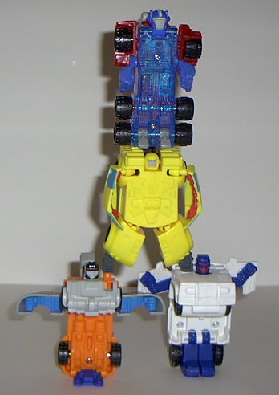
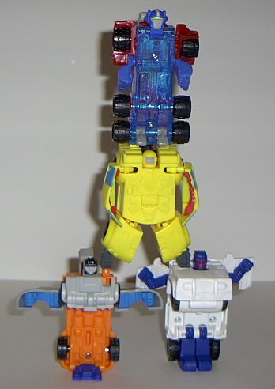

Rating : 0.3
Vehicle mode is a futuristic
truck cab. No trailer as with the $40
Super Base
Armada Prime
, but since I couldn't see him using a base that small,
it's just as well. Although it's somewhat accurate, the proportions are
a bit off- the smokestacks, even though they're small on the "official"
Armada Prime, are WAAAAY too small here- they barely even reach above the
tires! I'm also not very fond of Prime being made almost entirely out of
translucent plastic, esepecially since there's no paint detailing and lots
of mold detailing- this makes the latter go a bit unnoticed unless you're
in a well-lit room. Prime's Autobot symbol is on the knob on the top hood.
He has two Minicon ports, both on the back end of this mode, which make
him look really goofy if you attach him to a larger Transformer...
Even though I don't
expect much from a Happy Meal toy, Prime's robot mode could use some work-
it's basically just a log with arms, a head, and wheels. He has just a
"stand-up" transformation, so he doesn't have any articulation in the legs
or body or anything of the sort- all he can move is his arms at the shoulders
and elbows. As for his gimmick, he has "punching action" in his right arm-
press down on the yellow tab on his back and his arm swings up. Kinda lame,
but admittedly addicting- until it locks up, that is, as it seems to have
a tendency to do. His fists also glow, as well. And his robot head has
a visor instead of two eyes- what's up with that? Oh, and the Autobot symbol
in this mode is on the center of his chest.
Prime's kind of a boring
toy, but at least he's not
McDemolishor
.
And that punching action is a bit addictive... My favorite of the McArmada
Autobots.
No Stats
 Autobot
Gestalt
Autobot
Gestalt

Rating
: 0.3
The Autobot "gestalt"
is a laugh-out-loud joke. It's more like a cheerleading squad, really.
Basically you just pile all four of the McArmada Autobots on top of each
other. That's it. No visible hands, legs that are barely interpretable
as legs, four heads, lots of little arms. Pathetic, and not worth any further
comment.
Reviews by Beastbot